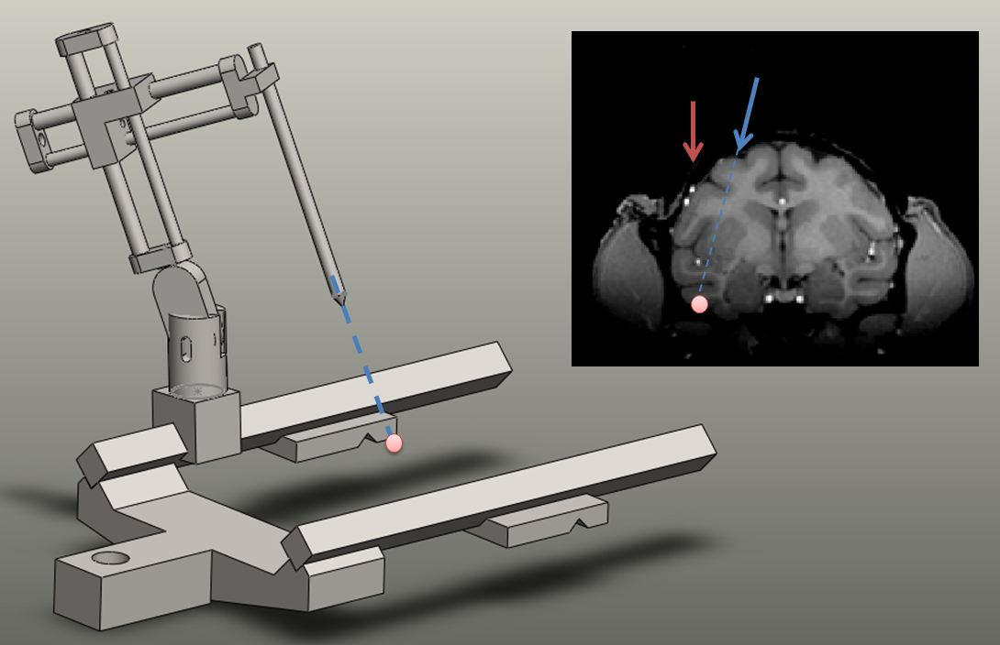
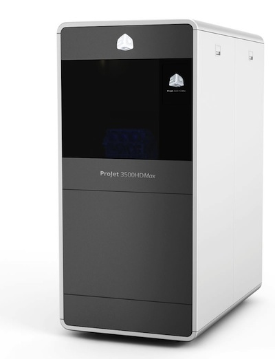

==============
--
Tsao Lab --
==============
+---------------+--------+--------------+----------+-----------+----------+---------+
|
Lab Positions |
People |
Publications |
Research |
Resources |
Teaching |
Contact |
+---------------+--------+--------------+----------+-----------+----------+---------+
Resources
Planner

Planner is a software for precise MR-guided electrophysiology, developed by Shay Ohayon.
Kofiko (website under Construction)
Kofiko is an experimental presentation/control software. It is implemented in matlab (uses PTB) and is quite generic when it comes to paradigm design. The system has been used in the lab for the last couple of years to deliver stimuli at precise times and to collect real time spike statistics.
3D Printing services

Our lab provides 3D printing services using Projet 3500. Click
here for more information.